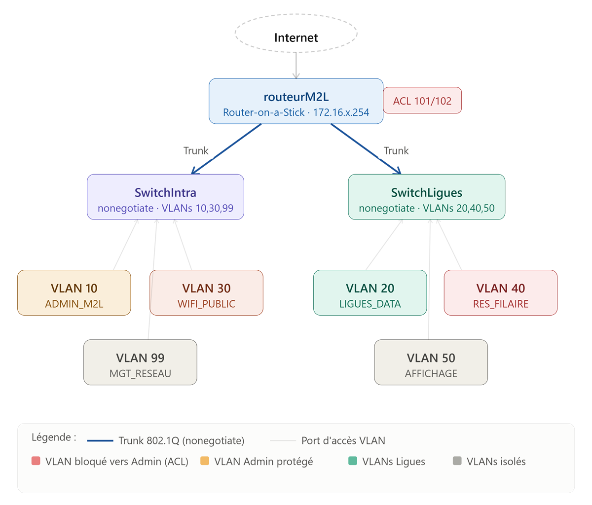

01Contexte et objectifs
La M2L (client fictif) dispose d'un réseau plat : tous les postes partagent le même domaine de diffusion. Les ordinateurs portables non maîtrisés, branchés dans les salles ressources, peuvent propager un virus jusqu'aux postes administratifs.
Le cahier des charges demande d'isoler les flux logiques sans changer l'infrastructure physique :
- séparer l'administration, les ligues, le Wi-Fi public, les salles ressources et l'affichage ;
- garder l'accès Internet pour tous les réseaux ;
- interdire aux réseaux non fiables (Wi-Fi public, salles ressources) d'atteindre l'administration.
02Environnement technique
- Simulation : Cisco Packet Tracer
- Équipements : un routeur
routeurM2L, deux commutateursSwitchIntraetSwitchLigues - Protocoles : VLAN, 802.1Q, Router-on-a-Stick, ACL étendues
- DMZ : adressage existant 10.54.0.0/24 conservé sur une interface dédiée

03Étapes de réalisation
- Plan d'adressage et cartographie
Un sous-réseau /24 par VLAN. La passerelle de chaque VLAN est en
.254.VLAN Nom Périmètre Sous-réseau 10 ADMIN_M2L Bureaux administratifs, reprographie 172.16.10.0/24 20 LIGUES_DATA Postes fixes des ligues 172.16.20.0/24 30 WIFI_PUBLIC Points d'accès visiteurs 172.16.30.0/24 40 RES_FILAIRE Salles ressources (matériel non maîtrisé) 172.16.40.0/24 50 AFFICHAGE Écrans d'affichage dynamique 172.16.50.0/24 99 MGT_RESEAU Administration des commutateurs 172.16.99.0/24 - Couche 2 : VLAN, ports d'accès et trunks
Déclaration des VLAN sur chaque commutateur, puis affectation des ports. Sur les trunks, DTP est désactivé avec
switchport nonegotiatepour empêcher le VLAN hopping.Cisco IOS · SwitchLigues! Port d'accès affecté au VLAN Administration Switch(config)# interface FastEthernet0/1 Switch(config-if)# switchport mode access Switch(config-if)# switchport access vlan 10 ! Port montant vers le routeur : trunk 802.1Q Switch(config)# interface GigabitEthernet0/1 Switch(config-if)# switchport mode trunk Switch(config-if)# switchport trunk allowed vlan 10,20,30,40,50,99 Switch(config-if)# switchport nonegotiate - Couche 3 : routage inter-VLAN (Router-on-a-Stick)
L'interface physique du routeur n'a plus d'adresse : elle est découpée en sous-interfaces, une par VLAN, chacune encapsulée en 802.1Q.
Cisco IOS · routeurM2LRouter(config)# interface FastEthernet0/0 Router(config-if)# no ip address Router(config-if)# no shutdown ! Sous-interface VLAN 10 - Administration Router(config)# interface FastEthernet0/0.10 Router(config-subif)# encapsulation dot1Q 10 Router(config-subif)# ip address 172.16.10.254 255.255.255.0 ! Sous-interface VLAN 40 - Salles ressources Router(config)# interface FastEthernet0/0.40 Router(config-subif)# encapsulation dot1Q 40 Router(config-subif)# ip address 172.16.40.254 255.255.255.0 ! (même principe pour les VLAN 20, 30, 50 et 99) - Sécurisation par ACL étendues
Par défaut, le routeur laisse passer tout le trafic inter-VLAN. Des ACL étendues sont appliquées en entrée sur les sous-interfaces des réseaux non fiables, au plus près de la source.
Cisco IOS · ACL 101 et 102! ACL 101 : salles ressources (VLAN 40) interdites vers l'Admin Router(config)# access-list 101 deny ip 172.16.40.0 0.0.0.255 172.16.10.0 0.0.0.255 Router(config)# access-list 101 permit ip 172.16.40.0 0.0.0.255 any Router(config)# interface FastEthernet0/0.40 Router(config-subif)# ip access-group 101 in ! ACL 102 : Wi-Fi public (VLAN 30) interdit vers l'Admin Router(config)# access-list 102 deny ip 172.16.30.0 0.0.0.255 172.16.10.0 0.0.0.255 Router(config)# access-list 102 permit ip 172.16.30.0 0.0.0.255 any Router(config)# interface FastEthernet0/0.30 Router(config-subif)# ip access-group 102 in
04Difficultés et solutions
Toute ACL Cisco se termine par un deny ip any any implicite. Avec seulement la règle d'interdiction, le VLAN perdait aussi son accès à Internet.
Ajouter une règle permit … any après le deny, car les règles sont lues de haut en bas. L'ordre est critique.
Les trunks négociés automatiquement (DTP) permettent une attaque de type VLAN hopping depuis un poste malveillant.
Trunks forcés en dur avec switchport mode trunk + switchport nonegotiate, et liste explicite des VLAN autorisés.
05Résultat
Des tests de connectivité entre VLAN ont validé la segmentation : les réseaux non fiables sont bloqués vers l'administration, et les flux légitimes passent.
| Source | Destination | Attendu | Obtenu | État |
|---|---|---|---|---|
| Admin (V10) | Ligues (V20) | Succès | Ping OK | ✓ conforme |
| Wi-Fi (V30) | Admin (V10) | Bloqué (ACL 102) | Timeout | ✓ conforme |
| Ressources (V40) | Admin (V10) | Bloqué (ACL 101) | Timeout | ✓ conforme |
| Ligues (V20) | Admin (V10) | Succès | Ping OK | ✓ conforme |
Ce cloisonnement sert de base au projet SUPERVIZ : les outils de supervision sont placés dans le VLAN Administration protégé.
06Compétences du référentiel mobilisées
- B1.1Gérer le patrimoine informatiqueRecenser et identifier les ressources numériques · Vérifier les règles d'utilisation des ressources (ACL)
- B1.4Travailler en mode projetAnalyser les objectifs d'un projet en équipe · Planifier les activités jusqu'à la soutenance
- B1.5Mettre à disposition un service informatiqueDéployer un service · Réaliser les tests d'intégration